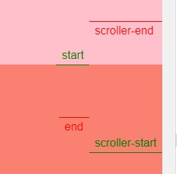
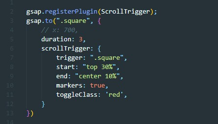

Начало и конец анимации
В качестве свойства scrollTrigger помимо строки, мы можем передать объект, который будет иметь следующие свойства:
- trigger - это свойство содержит строку с селектором тригера (анимируемого объекта)
- start - начало анимации.
Возможные значения
- 400 - анимация стартанет когда тригер поднимется по скролу на 400 пикселей
- top center - анимация начнется когда верхняя граница тригера будет на уровне центра вьюпорта
- top 30% - вместо слова center можно указывать проценты высоты вьюпорта начиная от верхней границы. Вместо top можно указывать center или bottom
- end - конец анимации. Здесь значение указывается так же как и у start
- markers - добавляет на страницу маркеры, которые показывают где начнется и акончится анимация. Нужна только для разрабов.

- toggleClass - в промежутке начала и конца анимации будет добавлен класс который мы передадим этому свойству
Пример JavaScript
